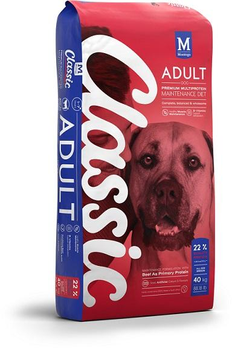
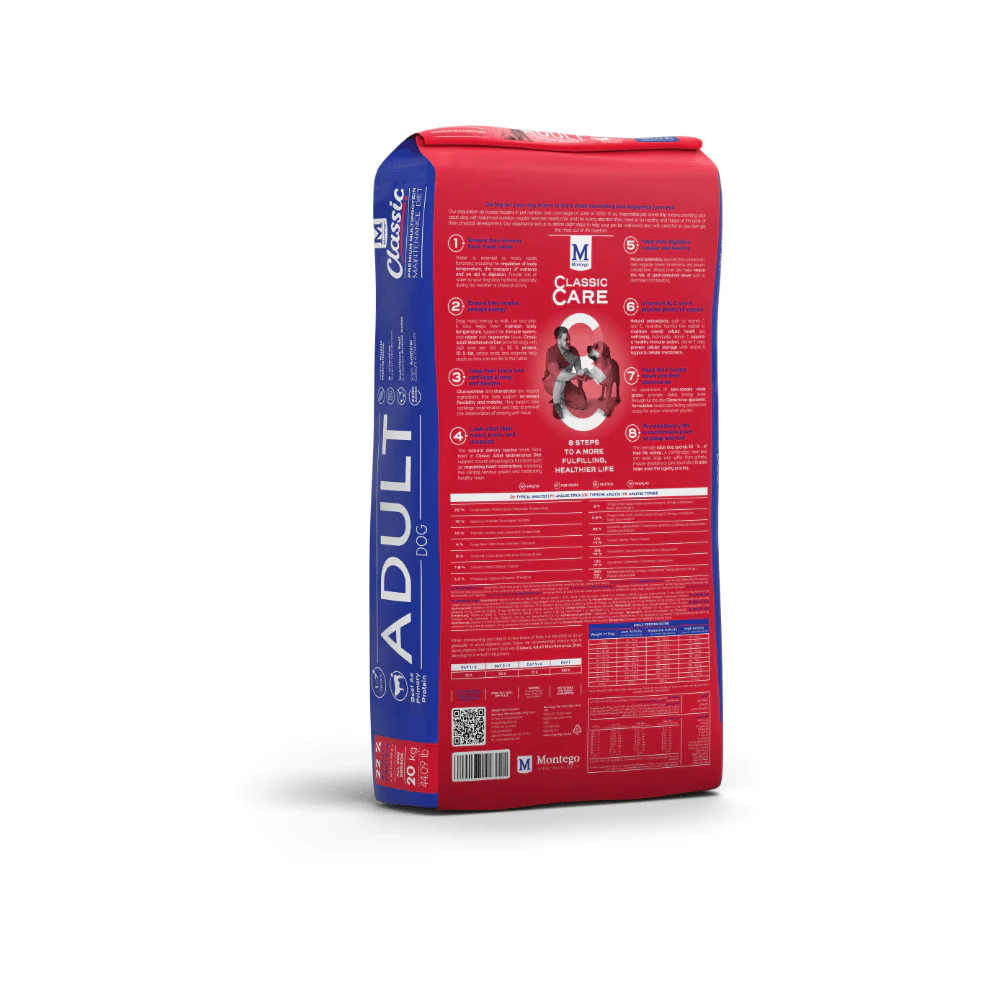

Alimentação para cães
Classic Adult
Classic Adult
40 kg
Ração Montego Classic para cães adultos, apresentada numa embalagem de 40 kg. A frente da embalagem identifica uma dieta de manutenção multiproteína com carne bovina como proteína principal.
- Para cães adultos
- 40 kg
- 22% proteína
- Fórmula multiproteína
Veja a embalagem
Informação visível na frente e no verso.
Consulte as fotografias da embalagem e confirme sempre no saco físico os ingredientes, a dosagem e as recomendações completas antes da compra.

Informação da embalagem
Os detalhes essenciais, num relance.
Estes dados correspondem ao que está visível nas imagens fornecidas do produto.
Um formato grande para a rotina.
A embalagem de 40 kg pode ser uma opção prática para quem procura um formato maior. Confirme com a nossa equipa o stock, o preço e as condições de armazenamento.
Confirme se é adequado ao seu cão.
Considere a idade, o porte, a rotina e as necessidades do seu animal. Para dietas especiais ou dúvidas de saúde, procure sempre orientação veterinária.
Comprar na Win Win
Peça disponibilidade antes de visitar.
Envie o nome do produto
Indique que procura a Montego Classic Adult de 40 kg.
Confirme o stock
A equipa verifica a disponibilidade e o preço antes da sua visita.
Visite a loja
Passe pela Win Win Pet Shop em Maputo para levantar o produto.